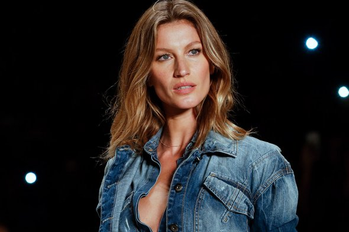

На второе место Дженнер оттеснила 37-летнюю бразильянку Жизель Бюндхен ($17,5 млн). До этого последние
15 лет именно она возглавляла список самых высокооплачиваемых моделей. В 2017 году Бюндхен, как напоминает Forbes,
продолжила позировать в Бразилии для производителя аромата Carolina Herrera, обуви Arezzo и ювелирных украшений
Vivara. Однако меньшее количество подобных кампаний для модели сказалось на ее доходе, который уменьшился на 43% по
сравнению с прошлым годом. Тогда Бюндхен, согласно данным Forbes, заработала $30,5 млн.